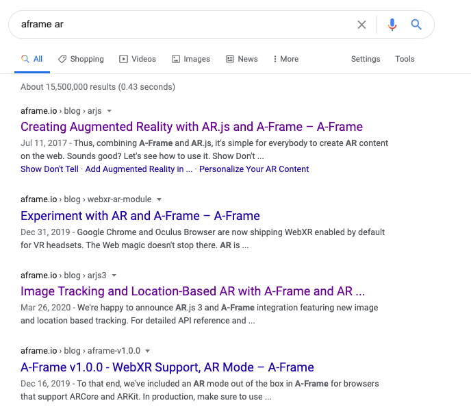

But first, do you like funny stories?
So, you might notice on A-Frame's website they don't really advertise their AR capabilities. Since we couldnt find AR on the A-Frame website but knew from heresay it was a possibility, we googled "aframe ar" and followed the first tutorial that came up:

That first 2017 tutorial caused us some challenges detailed below, like why are these markers so limited?
Well, turns out there is actually an updated tutorial from 2020, the 3rd result in that google search, that extends the marker to be an image or location - much cooler!
But actually the simple marker tutorial seems a little more explicit and simple for beginners.
So choose your poison - if you just want a basic understanding of how it works, the 2017 tutorial is nice.
If you want to make something really cool, go for 2020!
And always check the date of your tutorials!
Getting started
The 2017 tutorial is great to follow, but make sure you use the most current JS imports for aframe and AR.js as the ones in the tutorial are out of date and will make it buggy when you try to make a custom marker.
Also, check the basic starter scene out on this code pen with a hiro marker:
Trip ups we had that maybe you can avoid:
- If you want a custom marker, it needs to be a simple black and white design, you need to add the code preset='custom' in your a-marker-camera, and make sure your JS imports are the most current ones.
- We ran into a CORS error with our custom marker asset, but when we spun up a local server that issue resolved. Open your terminal to the folder of your project and run: python -m SimpleHTTPServer 8080
- Anticipate asking your user for 3 permissions - 2 camera permissions and 1 location permission.
- My computer fan was gasping for air, took a lot of processing power
Overall, we reccommend trying out A-frame because it's instantly gratifying, web based, fun, and an easy intro to AR in the web.
To hear us chat about the pros, cons and ratings while sitting in our seperate closets for optimum audio, tune into the podcast üëá